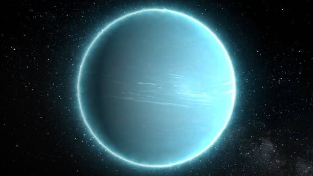
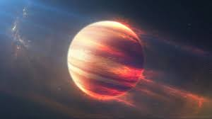

PHOTOS
 Uranus is the seventh planet from the Sun, and has the third-largest diameter in our solar system. It was the first planet found with the aid of a telescope, Uranus was discovered in 1781 by astronomer William Herschel, although he originally thought it was either a comet or a star.Uranus is about four times wider than Earth. If Earth were a large apple, Uranus would be the size of a basketball.Uranus has 27 known moons, and they are named after characters from the works of William Shakespeare and Alexander Pope.Uranus has an atmosphere made mostly of molecular hydrogen and atomic helium, with a small amount of methane.
Jupiter is called a gas giant planet. Its atmosphere is made up of mostly hydrogen gas and helium gas, like the sun. The planet is covered in thick red, brown, yellow and white clouds. The clouds make the planet look like it has stripes.One of Jupiter’s most famous features is the Great Red Spot. It is a giant spinning storm, resembling a hurricane. At its widest point, the storm is about 3 1/2 times the diameter of Earth. Jupiter is very windy. Winds range from 192 mph to more than 400 mph.